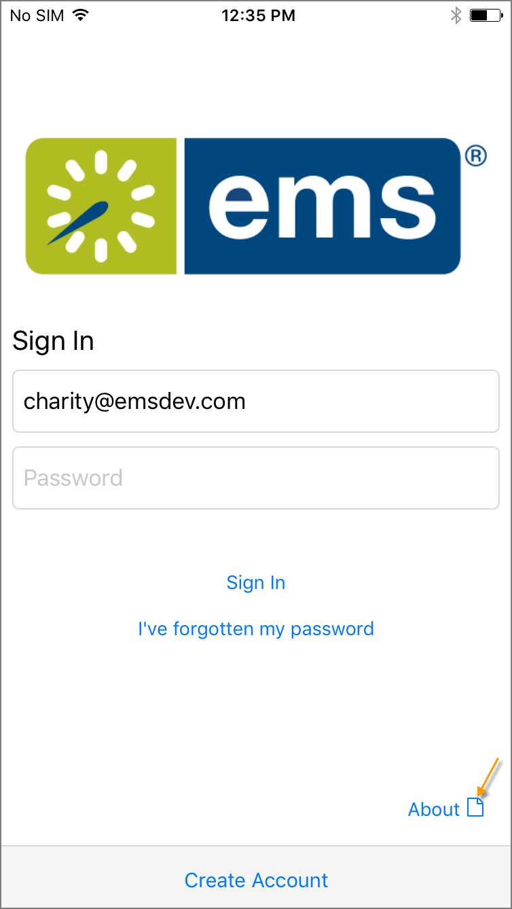
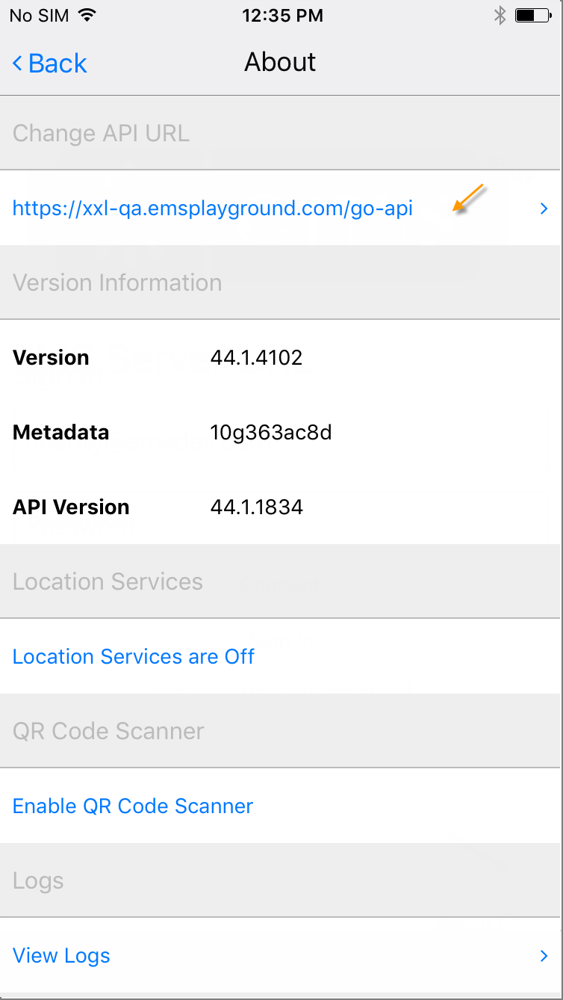

- From the Sign in screen, tap About in the lower right-hand corner.

- Once you are signed in, tap on the menu and navigate to the About screen.

- Either option will allow you to view, enter, or change the URL. Check with your Administrator for the correct URL.

- Tap Connect to finalize the new entry.